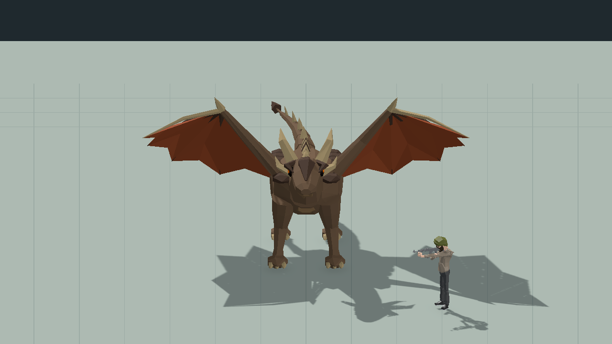
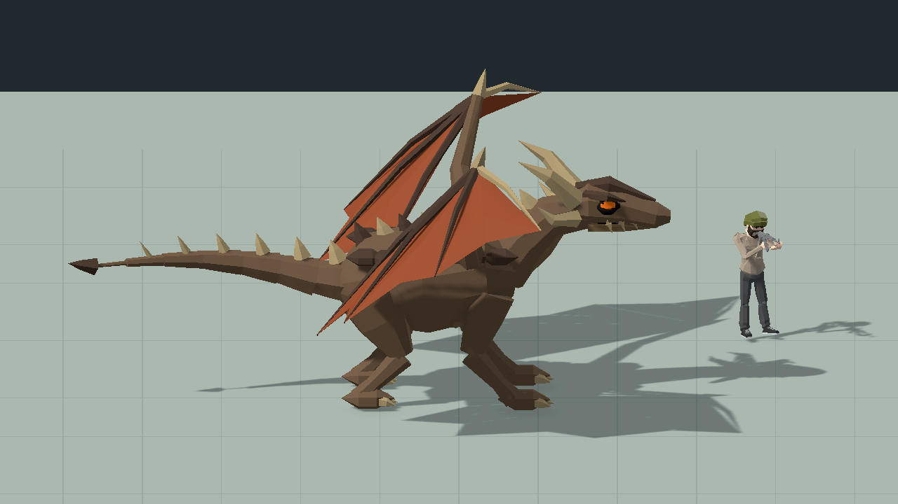
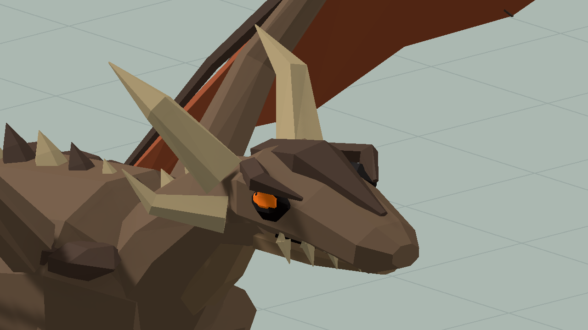
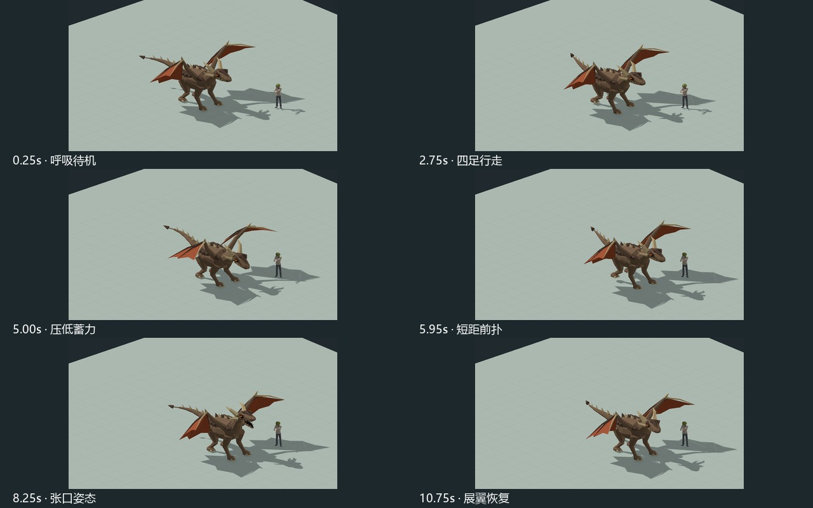
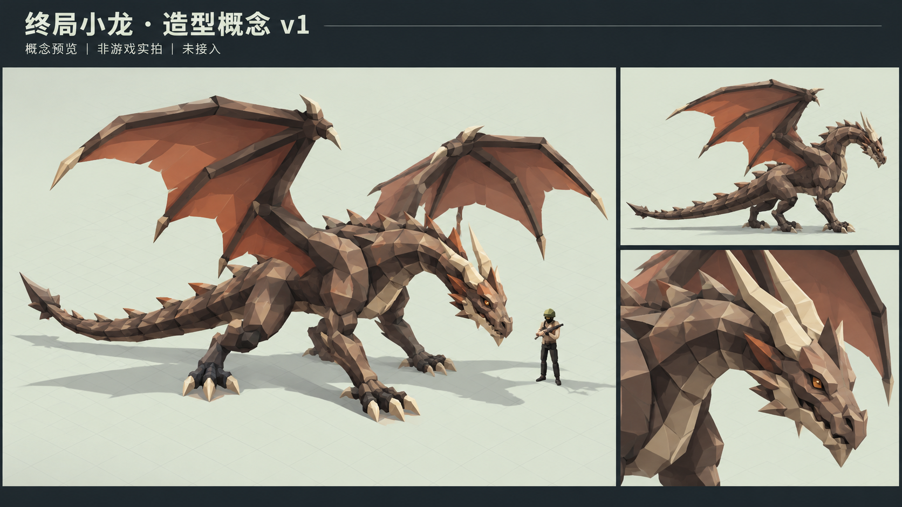

FIREPOWERLOOP / FINAL BOSS / UNITY PREVIEW
终局小龙 · 已正式接入
根据已采用的岩褐色龙身、暖色翼膜和长颈长尾概念制作。以下画面读取正式小龙 Prefab、材质与动画，正式主角保持原尺寸。终局 Boss 已使用该模型，单人与联机均接入原战斗阶段。
已按“那就替换”完成正式接入。血量、伤害、攻击节奏、增援和胜利出口规则保留。下方是正式资源的隔离回放，不是整局实战录像。
正式主角原尺寸同框12 秒 · 原速24 秒 · 半速独立预览场景
正式动画回放
依次展示呼吸待机 → 四足行走 → 压低蓄力 → 蹬地前扑与落脚 → 张口 → 展翼恢复。此处用固定演示路径检查资源。游戏内根位置始终由战斗规则决定，收招期间可继续追击。
展开 0.5 倍慢放，查看脚部与翼膜
实际模型同框





查看已采用的造型概念（非游戏实拍）

概念图确认了造型方向。该模型及动作已在本会话获明确采用，当前显示正式资源回读。
客户端限定检查 47/47、服务端限定检查 12/12 通过；正式网格与采用版一致，8片段626个采样点姿态偏差为零。未做真人双端整局或 Player Build。